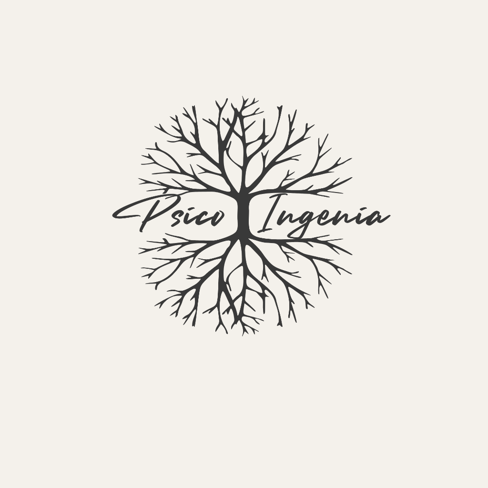
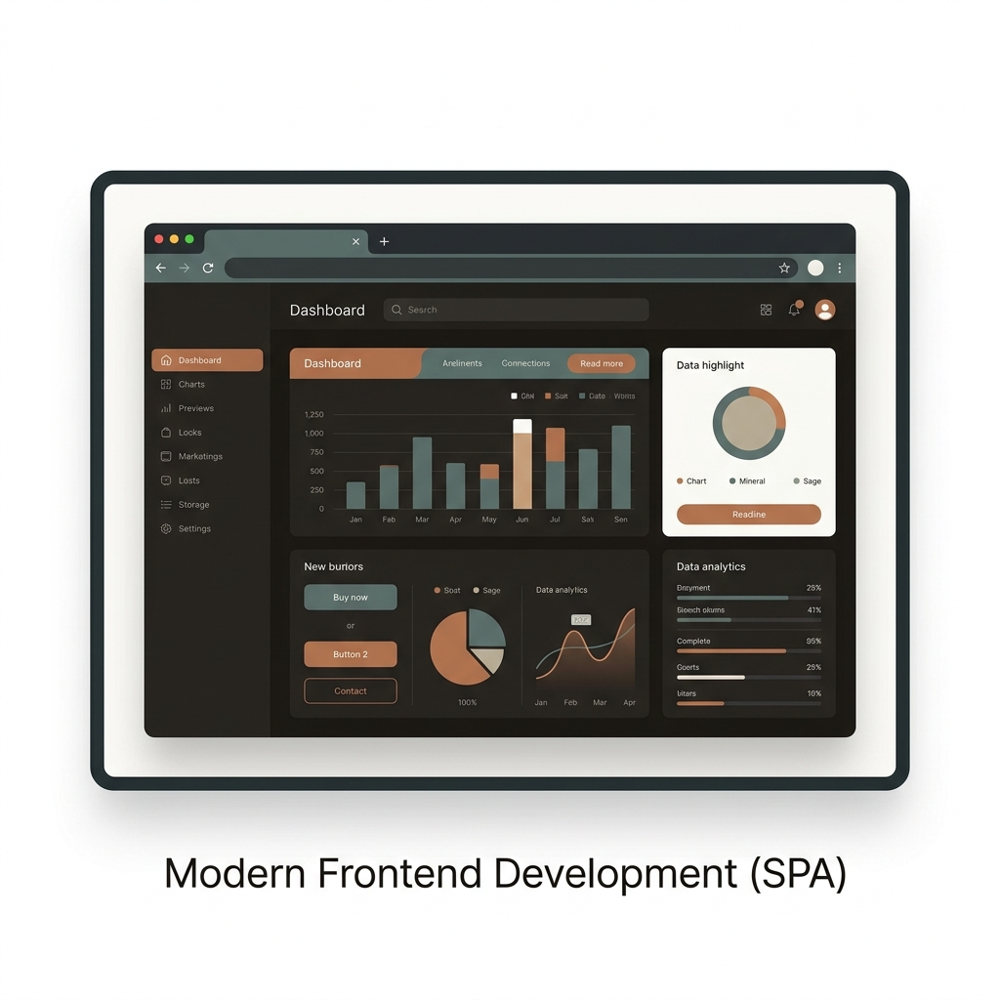
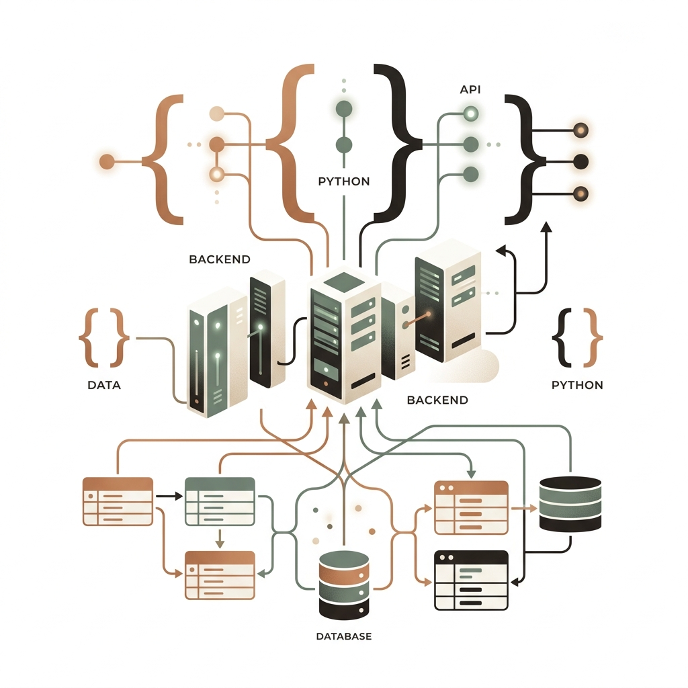
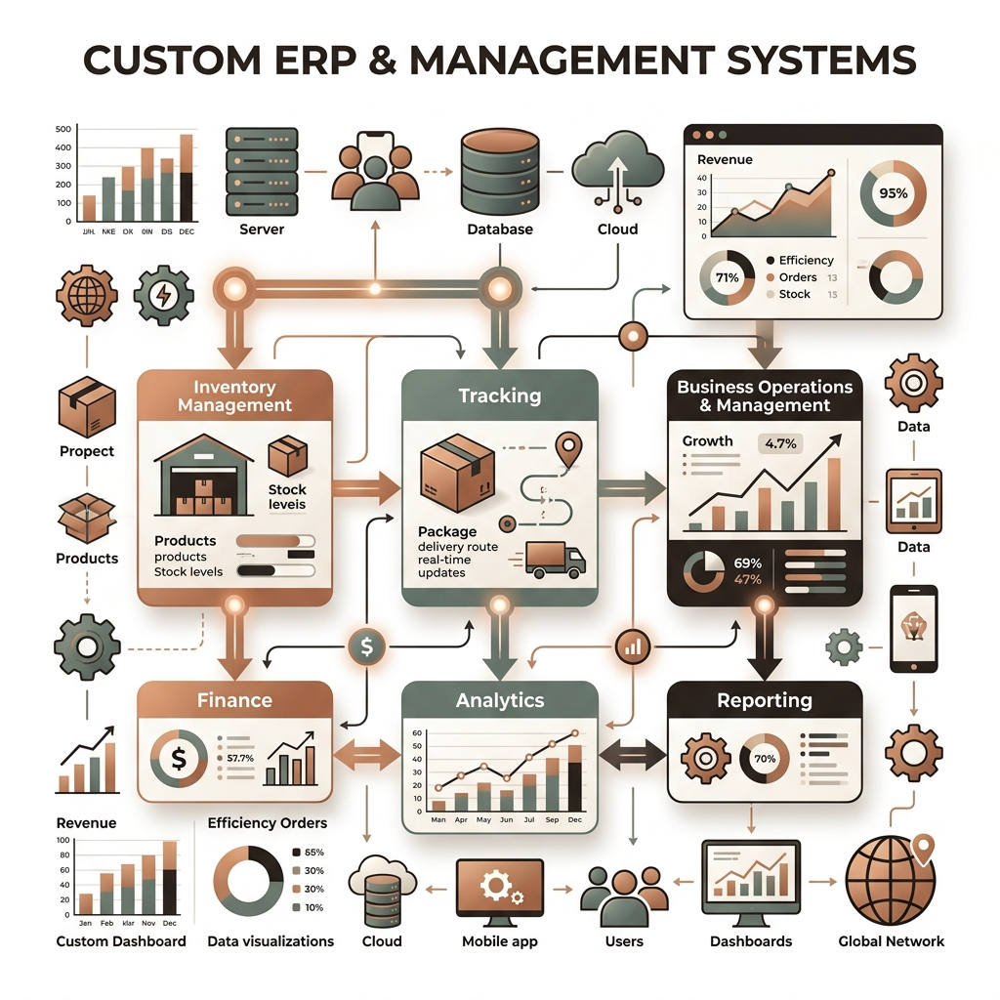
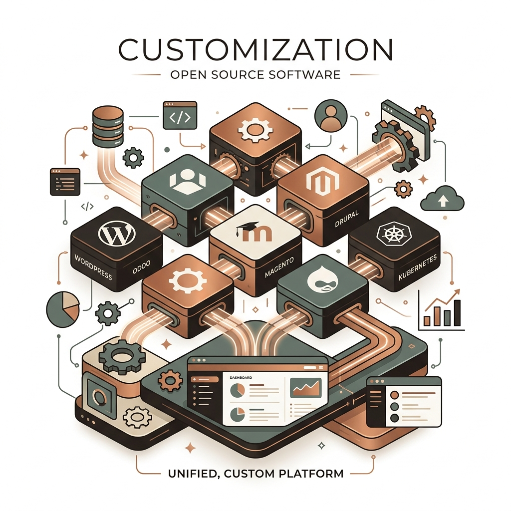
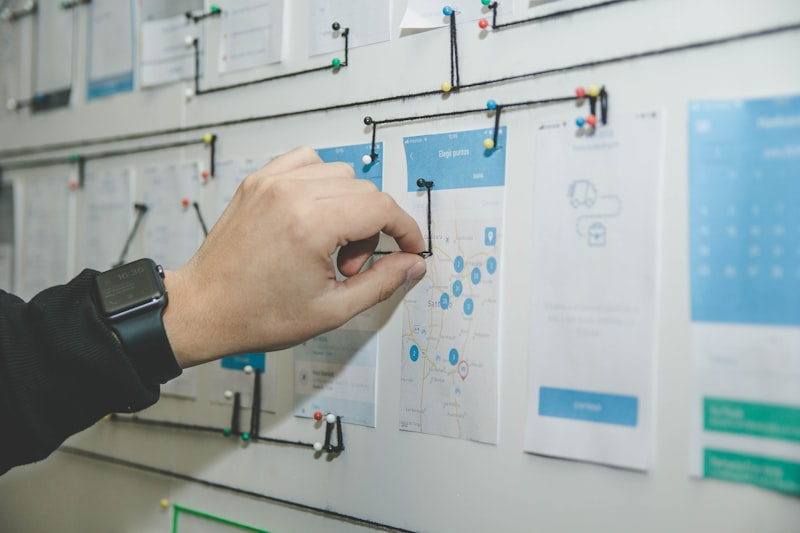

Portafolio de Trabajos
Explora proyectos donde acompañamos a empresas a modernizar su infraestructura, optimizar su base de datos y acelerar el desarrollo con un enfoque técnico, claro y humano.
SVO Ambiental
Desarrollo de herramientas y procesos digitales para fortalecer la gestión operativa y la trazabilidad de proyectos ambientales con enfoque técnico y funcional.

Psico Ingenia
Diseño y desarrollo de sitio web profesional para servicios de psicología. Plataforma con sistema de agendamiento, identidad visual y presencia digital de alto impacto.

Desarrollo Frontend Moderno (SPA)
Construcción de interfaces web modernas, dinámicas y responsivas para sitios y aplicaciones empresariales de alta gama.

Desarrollo Full Stack con Python
Aplicaciones web completas de extremo a extremo, incluyendo backend robusto, bases de datos optimizadas y despliegue en servidor.

Sistemas ERP y de Gestión a Medida
Desarrollo de sistemas a medida para digitalizar y automatizar procesos internos de empresas: gestión, monitoreo e inventario.

Personalización de Software Open Source
Implementación, adaptación y migración de plataformas de código abierto según las necesidades del cliente, con mejoras visuales y funcionales.

Automatización y Web Scraping
Desarrollo de módulos y procesos automáticos para la extracción, recolección y procesamiento inteligente de datos desde fuentes web.

Consultoría en Gestión de Proyectos TI
Dirección técnica y gestión de proyectos bajo metodologías ágiles, ideal para liderar equipos técnicos sin contratar personal a tiempo completo.